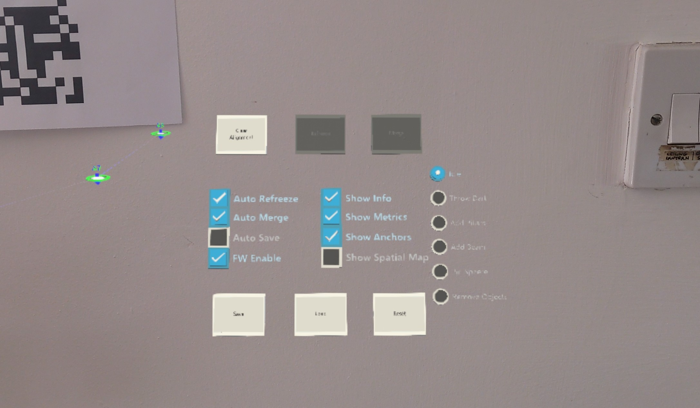

World Locked Physics Sample.
The Physics Beam Sample offers a few virtual physics experiences which are enabled by World Locking Tools' world locked coordinate system.
Back story
On HoloLens, the relationship between a spatial anchor and the head or other spatial anchors may change at any time as a result of incoming sensor data or even re-processing of existing data.
Unity's spatial anchors react to changes in the underlying spatial anchor's pose by dragging the attached GameObject along with it. This causes difficulties for physics simulation:
- Because the spatial anchored GameObject's pose is explicitly set by the spatial anchor each frame, it can't be set by simulation (e.g. momentum).
- Because the spatial anchor is frequently updating its GameObject's pose, it will not appear to be at rest relative to other still RigidBodies.
- Because of implicit shifts of Unity's coordinate system as spatial anchors adjust the coordinates of static Holograms to keep them fixed relative to the real world, physics computations such as routes and trajectories will be off. For example, a projectile perfectly aimed at a Hologram will still miss if the Hologram is repositioned by its spatial anchor in between the trajectory computation and it reaching the target.
When the relationships between measured spatial anchors and the visible virtual objects locked to them becomes inconsistent, then rather than adjusting the virtual objects as Unity's spatial anchors do, World Locking Tools adjusts the head transform to minimize perceived artifacts from those inconsistencies. This allows the virtual objects to appear consistent in a stable coordinate space, eliminating the above issues.
Building the sample
Note that the sample requires the SpatialPerception capability. The Microphone capability is also required for voice commands.
This sample requires that the following layers be added to the project's Tags & Layers:
- Pillared
- SpatialMapping
Running the demo
The controls HUD
This basic HUD is not specific to this Physics Beam Sample, but only allows runtime control of World Locking Tools' behavior to explore its capabilities. It is available as a drop-in for development on any application using World Locking Tools, as described in World Locking Tools' Initial Setup.

Additional diagnostic statistics are displayed by default, but can be disabled from the Control HUD.
The modes radio buttons
At any given time, the sample can be in any one of the following modes:
Idle - The physics sample is not currently processing input. The HUD and radio button menu, of course, continue processing inputs.
Throw Dart - A trajectory is computed, based on basic physics laws, and displayed. The displayed arc shows the path a projectile fired (via select gesture) will follow. The thrown dart will follow a ballistic trajectory, bouncing off of any collision surfaces, including Spatial Reconstruction (SR) meshes, that it impacts.
These Darts are "removable", as described below.
Add Pillars - On a select gesture, a ray is cast into the world in the indicated direction. If it finds a collidable surface, a vertical pillar is added to the scene there.
Every Pillar added is collidable, and can serve as a beam support, as described below. However, there are two flavors of Pillars added:
- If the surface the pillar is set upon is "removable", then the pillar is physically simulated (e.g. can be knocked over).
- Else the pillar collidable, but static.
Effectively this means if a pillar is added on the SR mesh, it will be static, else it will be dynamic.
Pillars are "removable".
Add Beam - On first select, a ray is cast into the scene to find the first end-point of the beam. After that, as the selection ray is moved through the scene, a line is drawn from the first end-point to the current end-point. The second select gesture will create a beam stretching between the first and current end-points.
Balancing the Beam with endpoints on Pillars clearly requires a space in which the endpoint Pillars will remain fixed relative to each other.
Beams are "removable".
Remove Objects - On select, if the ray cast object is "removable", then it is removed from the scene. Any objects being supported by the removed object will then fall.